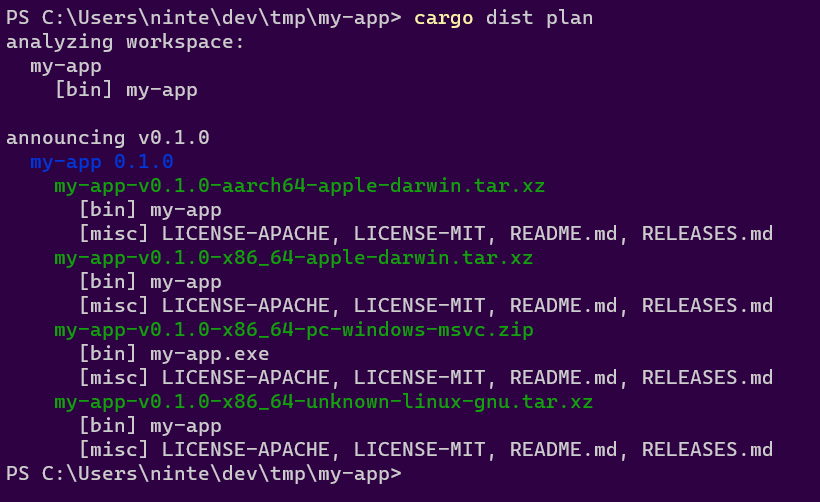

Guide: A Simple Application
Let's start with the kind of simple Cargo Workspace you would get from cargo new my-app (or cargo init my-app): a single package that defines a binary target. This is exactly the situation the Way-Too-Quickstart should work perfectly for. Here we're going to take it a bit slower.
Our goal will be to setup a Github CI workflow that announces a new release of our application with a Github Release. The workflow will also build our application for the 3 major desktop platforms, wrap the binaries in zips/tarballs, and upload them to the Github Release. The Github Release's text will also include the relevant release notes from our RELEASES.md file.
The workflow will be triggered whenever you push a Git Tag specifying the application's new version, like "v1.0.0". Don't worry, you won't need to write those workflows yourself, cargo-dist will generate them for you!
TO BE EXTREMELY PEDANTIC: The workflow will trigger whenever Github sees that the git tag and the commit it refers to are part of the repo and the timestamp(?) of both(?) is after the commit that introduced the workflow's yml file. That last part is an absolute headache, and may require you to delete the tag both locally and on github if you created it before the workflow. Basically, setup cargo-dist before you start cutting releases!
Setup (and Updates)
To setup cargo-dist on our project (after we've installed it), we "need" to run cargo dist init, which will provide us with a series of interactive prompts and explanations to configure our project. The recommended option can always be selected by hitting ENTER, and you can automate that by just passing --yes.
You can rerun init as many times as you want, as it also functions as an "update" command for your config. This is especially convenient for updating your project to the version of cargo-dist you're running, as it will prompt you to do that whenever the versions don't match (refusing to proceed if declined).
cargo dist init
init on its own just edits your Cargo.toml to include the recommended defaults. If you have enabled CI support, it will also run cargo dist generate after setting things up. This ensures your config and your CI scripts are in sync, but will unfortunately clobber any hand-edits you made to the scripts.
Let's look at those defaults that were added (yes those comments are generated too, you will never stop me from adding more docs!!!):
# The profile that 'cargo dist' will build with
[profile.dist]
inherits = "release"
lto = "thin"
# Config for 'cargo dist'
[workspace.metadata.dist]
# The preferred cargo-dist version to use in CI (Cargo.toml SemVer syntax)
cargo-dist-version = "0.0.6"
# CI backends to support
ci = ["github"]
# The installers to generate for each app
installers = []
# Target platforms to build apps for (Rust target-triple syntax)
targets = ["x86_64-unknown-linux-gnu", "x86_64-apple-darwin", "x86_64-pc-windows-msvc", "aarch64-apple-darwin"]
If your config doesn't have
ci = ["github"]by default, then you probably don't haverepository = "https://github.com/..."consistently set in your Cargo.toml(s). The rest of this guide will assume you did. cargo-dist will work fine without it, you just won't get Github CI integration or installers.
The "dist" Profile
First let's talk about [profile.dist]. This is a custom Cargo Profile that cargo-dist will use to build your app. If you want to, you can use it yourself by passing --profile=dist to cargo (i.e. cargo run --profile=dist). We define a separate profile from the normal "release" one so that you can be comfortable giving your Shippable Builds more aggressive settings without making local development too tedious.
In this case the default profile cargo-dist recommends is essentially the same as --release (hence inherits = "release"), but with thin LTO enabled (lto = "thin"). This will make the build take longer, but produce more optimized builds.
cargo-dist uses the existence of [profile.dist] in your Cargo.toml to detect if your project has been properly initialized, and will generally refuse to run other commands otherwise. Sorry but you can't delete the profile!
The Workspace Config
Next let's talk about [workspace.metadata.dist]. Cargo allows other tools to include their own project-wide settings in this kind of metadata table. See config for the full set of options, but here we'll look at the defaults.
cargo-dist-version = "0.0.6" is cargo-dist recording its own version in your config for the sake of reproducibility and documentation. When you run generate the resulting CI scripts will use that version of cargo-dist.
ci = ["github"] lets subsequent runs of generate know what CI scripts to generate. Its presence also enables certain Github-specific features like generating the body for a Github Release and telling installers to fetch binaries from a Github Release. It will be enabled by default if you have repository = "https://github.com/..." consistently set in your Cargo.toml(s). ("github" is currently the only supported CI backend.)
installer = [] is just saying that we haven't enabled any installers. Installers are intentionally excluded here to keep this example focused.
targets = ... is listing the platforms to build your application for. In this case, because we didn't specify the targets with --target, init has selected the "recommended desktop suite": "x64 linux", "x64 macos", "x64 windows", and "arm64 macos (Apple silicon)". In v0.0.6 these are the only properly supported choices, because we wanted to get the core of cargo-dist solid first. Future versions should hopefully introduce proper support for important targets like "musl linux".
The CI Script
Because we set ci = ["github"], init invoked generate for us. Creating the Github CI workflow we wanted at .github/workflows/release.yml. Rather than including the full text here, I'll just link cargo-dist's own release.yml, because cargo-dist is self-hosting and has an extremely boring build/config that is basically equivalent to the one we're looking at in this example.
The first thing you might notice is that there's a lot of comments describing the script. As always: you will never stop me from writing more docs and shoving them in your face. Actually ok you can stop me because I need to write a lot of docs here and those comments are already decent docs. Feel free to peruse them to get a feel for it.
One thing I want to emphasize is that each job of the workflow essentially boils down to "install cargo-dist, run cargo-dist exactly once, then upload the files it tells you to". Ideally this means you can run that one cargo-dist command and get the same things that CI produced!
Anyway, the CI totally does all the things we said it should! Yay!
Finishing Setup
Now that we've run cargo dist init, all we need to do is commit the results and push them up:
git add .
git commit -am "wow cool new cargo-dist CI!"
git push
Actually wait we should... probably test that we set things up properly? The devil's always in the details when it comes to CI, but we can do some initial checking of things with the plan command:
cargo dist plan
plan is the same as build but it doesn't actually run the build and defaults to reporting info for all platforms. This makes it ideal for asking cargo-dist about the full Announcement a CI run would produce.
If everything went right, you should see something like the following:
 .
.
This output has two parts: "analyzing workspace" and "announcing"
"analyzing workspace" describes what cargo-dist found in your workspace. In this case there's a package called "my-app" with a binary target of the same name.
"announcing v0.1.0" tells us the tag that should be pushed to announce a release of the current workspace ("v0.1.0"). Underneath it we see that the announcement will include "my-app 0.1.0" as expected. Underneath that we see 4 artifacts will be produced and uploaded:
- The Intel macOS build: my-app-v0.1.0-x86_64-apple-darwin.tar.xz
- The M1 macOS build: my-app-v0.1.0-aarch64-apple-darwin.tar.xz
- The Windows build: my-app-v0.1.0-x86_64-pc-windows-msvc.zip
- The Linux build: my-app-v0.1.0-x86_64-unknown-linux-gnu.tar.xz
It also helpfully lists the contents of each zip. In this case I didn't properly setup my project at all, so it only contains a prebuilt binary. If I actually add files like README.md, LICENSE, and RELEASES.md, cargo-dist will helpfully pick those up and include them (disable this with the auto-includes=false config):

If you add --output-format=json you'll get a full machine-readable output instead, and have locally recreated the first step of the generate CI!
Cutting Releases
With all our one-time setup done, we're ready to cut a release! This can be streamlined a lot with cargo-release which will do essentially everything we're about to go through with a single command (see the guide on that), but it's helpful to understand the actual steps in case cargo-release doesn't fit your usecase or if you need to debug issues.
The first step is to do all the things you would do to prep a release: update docs, update release notes, bump version numbers in Cargo.tomls, run tests, and so on.
At this point we're confident and want to release things for real. Once again, we can check what cargo-dist thinks should happen with the plan command:
cargo dist plan
Similarly you can check that cargo publish will work with the --dry-run flag:
cargo publish --dry-run
If both of those seem happy, you're ready to release! All we need to do is push up a commit that has the Git Tag that plan suggested. As we've seen in previous sections, it's recommending "v0.1.0" for our example app, so let's use that:
# Publish to a Github Release with cargo-dist
git commit -am "Chore: Release 0.1.0"
git tag "v0.1.0"
git push
git push --tags
# Publish to crates.io
cargo publish
and that's... it! If everything's working, your CI should spin up a "Release" workflow that cargo-dist generated for you, and after a few minutes the "Releases" section of your repo should have all the results populated with something like this:

Oops! There's some extra features in that screenshot that I haven't explained yet! This includes the "Release Notes" feature and a few installers. Since we're talking about Releasing, let's talk about Release Notes.
Release Notes
If your project has a top-level RELEASES/CHANGELOG file like "RELEASES.md", then cargo-dist will automatically try to use it as part of your Announcement (Github Release). We use the parse-changelog library to try to find a heading for the version you're releasing, and if we do, we add it to the Github Release's text. We also use the heading as the title for the Github Release (rather than just the git tag).
Roughly speaking, the library is looking for something like:
# <ignorable prefix> <version> <ignorable suffix>
For instance in # Version 1.0.0 (2022-03-01), the only really important part is the "1.0.0", which should exactly match the Cargo version of your package. If you want to see how your RELEASES/CHANGELOG file is interpreted you can install parse-changelog as a CLI and run it on the file to see what it thinks. In the future we'll have some better debugging tools for this.
If you're publishing a Version with some prerelease bits like "1.0.0-prerelease.1", then we'll first look for that exact match in your RELEASES/CHANGELOG. If we can't find it we'll strip the prerelease/build suffix (in this case going back to "1.0.0") and check for that. If that finds a match we'll edit the heading to include the prerelease suffix when we include it in the Announcement. This lets you have a stable heading like # Version 1.0.0 (under development), and prereleases will get headings like # Version 1.0.0-prerelease.1 (under development).
If none of the previous rules apply, "1.0.0-prerelease.1" will also match a special "Unreleased" heading (i.e. "# Unreleased"), which will get rewritten to "# Version 1.0.0-prerelease.1". This lets you maintain a changelog for a pending release without having to commit to what version it will be.